Photos du site d’origine
Réalisations de toiture et façade
Une galerie consultable par catégorie avec les photographies récupérées du site historique ETS Sabas. Certaines images d’origine ont une définition limitée.
Chantiers à découvrir
Cliquez pour agrandir. Photos historiques conservées, sans les présenter comme des projets récents.
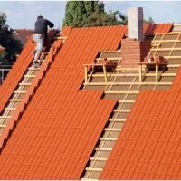
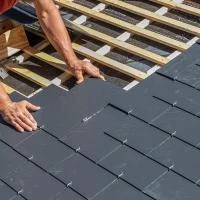
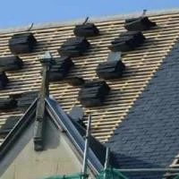
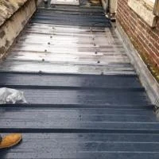
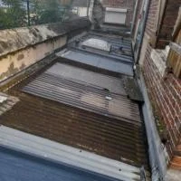
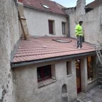
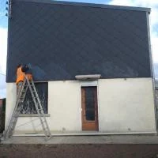

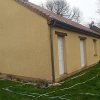
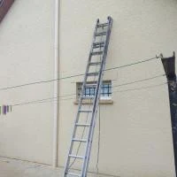
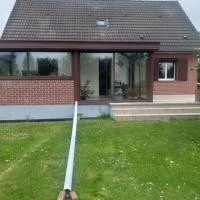
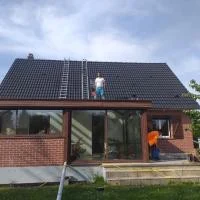
Parlons de votre toiture ou de votre façade
Pour obtenir des informations sur une intervention, contactez directement ETS Sabas.